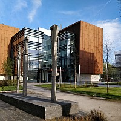

Michael Gaultois@Liverpool
Theme Lead, Leverhulme Research Centre for Functional Materials Design
Most of our technologies are limited by the performance of materials, so it's critical to discover new materials to enable new transformative technologies. Researchers have been discovering materials for a long time, but it's generally a slow and unpredictable process. I lead the activity related to the discovery of new inorganic materials, and develop new methods for materials discovery in a systematic fashion, so that we can accelerate our search for new materials with exciting new properties.
Publications and curriculum vitae»
Summary of curriculum vitae»
The Materials Innovation Factory@Liverpool
One of the top five materials research facilities in the world
Home to the Leverhulme Research Centre for Functional Materials Design, the MIF houses a scientific and engineering community that creates new collective knowledge and fosters the next generation of scientific leaders, and serves as the innovation engine for discoveries in new materials. In addition, the MIF Open Access Area hosts one of the highest-concentrations of materials science robotics in the world, and a suite of advanced analytical equipment.
Read more about the MIF »
Read more about the LRC for Functional Materials Design»
Quick Resources
- VESTA
3-D visualization for crystal structures - Demeter
GUI for analysis of XANES and EXAFS - Knovel critical tables
Chemical reference data - Space Group Tables
High-resolution diagrams and tables - NIST XPS database
Reference data for core-line BEs - ProTeXt
A TeX distribution for Windows - JabRef
Open source reference manager